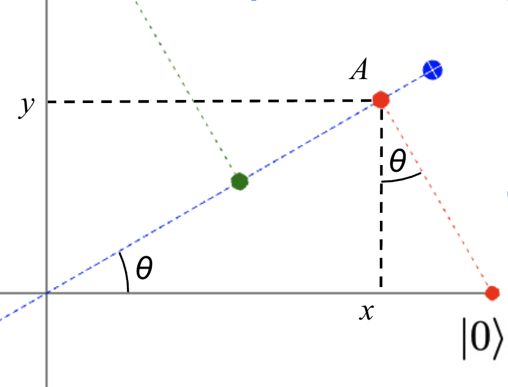
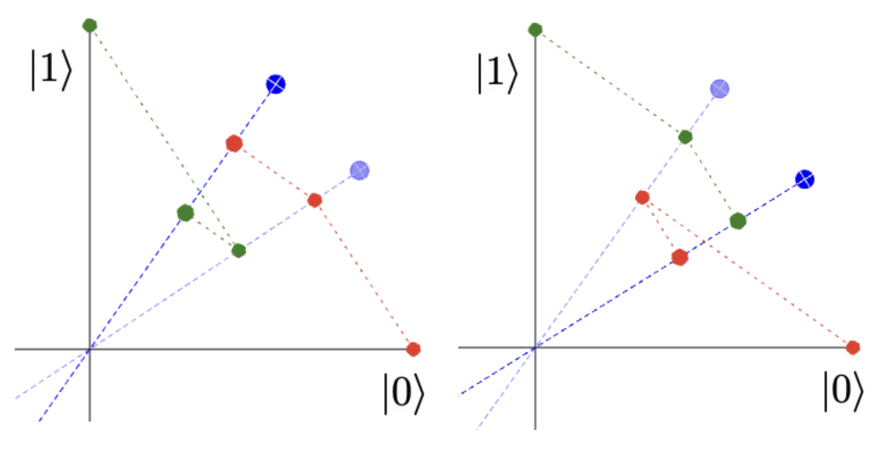
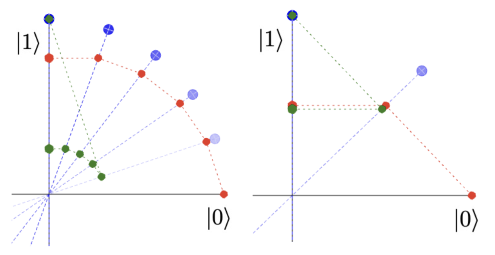
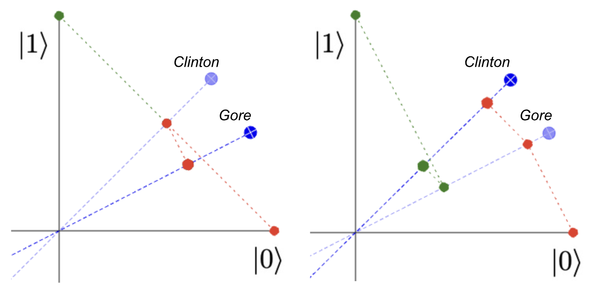

Projection operators are used in many parts of mathematics and sciences. They can be used to form the shape of a shadow on a screen, to make a compressed representation of an item in a dataset, to remove noise or interference in signal processing, and even to predict what answer a person will give to a question about someone else's trustworthiness. (More on that below.)
In quantum mechanics, projections play a vital role in modeling measurement. This is because the probability of observing a particle in a particular pure state is determined by the size of the projection from the particle's state vector to the vector representing the pure state. (OK, particles have wavefunctions that are represented by state vectors that get projected onto pure states — that's a lot to take in if it's not familiar! If so, it might be good to read Quantum Behavior by Richard Feynman, and to learn about the Born rule.)
The interactive diagram below helps to understand how projections work. The blue axis is the projection axis, and the red and green circles show where the $|0\rangle$ and $|1\rangle$ basis states end up when projected onto this axis. Try dragging the blue projection axis around the diagram. Note the way the red component gets bigger the closer the projection is to the $|0\rangle$ axis, and the green component gets bigger the closer the projection is to the $|1\rangle$ axis.
Projection Matrices and CoordinatesThe matrix for such a 2-dimensional projection is given by $$\begin{pmatrix} \cos^2(\theta) & \cos(\theta)\sin(\theta) \\ \cos(\theta)\sin(\theta) & \sin^2(\theta) \\ \end{pmatrix}$$ where $\theta$ is the angle between the projection axis and the $x$ or $|0\rangle$ axis (see figure to the right). This is often considered too simple to include in textbooks, but it's worth understanding the derivation. The distance from the origin to the point $A$ is $\cos(\theta)$, since this is the adjacent side of the triangle whose hypotenuse is the $x$-axis from the origin to $|0\rangle$. It follows that the $y$ coordinate of this point (the distance from $A$ to $x$) is $\cos(\theta)\sin(\theta)$ and the $x$ coordinate (the distance from $A$ to $y$) is $\cos(\theta)\cos(\theta) = \cos^2(\theta)$. We can do exactly the same reasoning starting with state $|1\rangle$, and show that the coordinates for the green circle are $x = \cos(\theta)\sin(\theta)$ and $y = \sin^2(\theta)$. Then, since a projection is a linear transformation, we can predict its entire behavior from its action on thet set of basis vectors. We know that $$ \begin{pmatrix} 1 \\ 0 \end{pmatrix} \Longrightarrow \begin{pmatrix} \cos^2(\theta) \\ \cos(\theta)\sin(\theta) \end{pmatrix} \quad\mathrm{and}\quad \begin{pmatrix} 0 \\ 1 \end{pmatrix} \Longrightarrow \begin{pmatrix} \cos(\theta)\sin(\theta) \\ \sin^2(\theta) \end{pmatrix} $$ so the matrix for the whole operation must be the one written above. If we make sure to use unit vectors for our axes, then $x = \cos(\theta)$ and $y = \sin(\theta)$, so this takes the particularly simple form $$P_{(x, y)} = \begin{pmatrix} x^2 & xy \\ xy & y^2 \\ \end{pmatrix}$$ |
 |
This is exactly what the javascript function that runs the demo above does when it projects a point to a given axis:
/**
* Returns a shallow copy of the given point, with x and y coordinates
* projected onto the given axis.
*/
function pointProjectedToAxis(point, axis) {
newPoint = Object.assign({}, point);
newPoint.x = axis.x * axis.x * point.x + axis.x * axis.y * point.y;
newPoint.y = axis.x * axis.y * point.x + axis.y * axis.y * point.y;
return newPoint;
}
In the context of quantum computing, these projections have a physical meaning: if a qubit is prepared in the state $|0\rangle$ and the state along the blue axis is measured, the probability of finding the qubit in this state is given by the square of the magnitude of the projection output — that is, the square of the distance from the origin to the red circle. We already noted above that this distance is equal to $\cos(\theta) = x$, and so the probability of measuring a 1 output is equal to $x^2 = \cos^2(\theta)$. Correspondingly, the probability of starting in the $|1\rangle$ state and getting a 1 output is equal to $y^2 = \sin^2(\theta)$.
If the qubit is prepared instead in the blue state itself (a superposition of the $|0\rangle$ and $|1\rangle$ states), then $\cos^2(\theta)$ and $\sin^2(\theta)$ are respectively also the probabilities of measuring the qubit in the $|0\rangle$ and $|1\rangle$ basis states: these are mutually exclusive events, reflected by the fact that $\cos^2(\theta) + \sin^2(\theta) = 1$.
If you haven't already, try dragging the blue circle and moving the projection axis. Note the way the red circle goes towards the origin when approaching the $|1\rangle$-axis, as does the green circle when approaching the $|0\rangle$-axis. So we go entirely from expecting a $|0\rangle$ result to expecting a $|1\rangle$ by rotating through 90 degrees, or $\pi / 2$ radians. And if we rotate through 180 degrees, the blue line is back in the same place, and the green and red circles end up back where they started! This is an important fact about projections — if an axis or plane is reversed completely, it performs exactly the same projection operation and thus predicts exactly the same probabilities.
This gets particularly interesting when we consider a chain of several projections. Try moving the axes around and adding another axis or two to the demo below and see what happens.

The two situations in this picture are meant to be exactly the same, except that the axes are ordered differently: and this crucial change makes the outcomes quite different too. The order of projections really matters. This is obvious when we look at the pictures, and it's important to emphasize in mathematics. Projections are operators, and operators that can give different answers depending on what order they are applied in are said to be non-commutative.
Intuitively, it's easy to see that the final distance from the origin of the green or red circles
doesn't depend on finishing close to where they started: it depends
on the jumps all being relatively small.
We can use this intuition quite systematically to guide projections around the space.
For example, a whole chain of projections can be assembled that gives a particle in the
$|0\rangle$ state a high probability of ending up being measured
in the $|1\rangle$ state (below left), and with just two such projections set up
at exactly 45 degrees from one another, we can give this about a 50-50 chance (below right).

|
The mathematics above describes what happens in the physical world very directly. A simple demonstration can be made using polaroid filters, which are commonplace in photography for reducing glare. If we arrange two polaroid filters at 90 degrees to one another, they block nearly all light from passing through. But if we add a third filter, instead of just reducing the remaining light even further, sometimes it restores some light instead! This is shown in the video to the right. The amount of light restored is greatest when the third filter is at an angle half-way between the other two filters, just as in the projection example above. The explanation is that each filter doesn't just allow through some light and reject the rest — somehow the light that passes through the filter is changed so that its polarization coincides with the filter's. When measuring the polarization of a single photon, or the spin of a single electron, this is exactly what happens. If we measure for spin in an up-down direction, the electron will afterwards be spinning either up or down, not sideways. The famous Uncertainty Principle is also rooted in this mathematics. Measurements are modeled by projection operators, and we've seen that projections don't commute with one another, so applying $P$ then $Q$ or $Q$ then $P$ will typically give different outcomes. The overall uncertainty when trying to measure $P$ and $Q$ is at least as big as $PQ - QP$. So the extent to which two observables are compatible depends directly on how much difference is made by changing the order of projections. Some Differences with Quantum ComputingThere are some implementation differences between the sketch given above and what happens in real quantum computers in 2022. These include:
|
|

In a Gallup poll conducted during September 6–7, 1997, half of the 1,002 respondents were asked the following pair of questions: “Do you generally think Bill Clinton is honest and trustworthy?” and subsequently, the same question about Al Gore. The other half of respondents answered exactly the same questions but in the opposite order. ... The results of the poll exhibited a striking order effect. In the non-comparative context, Clinton received a 50% agreement rate and Gore received 68%, which shows a large gap of 18%. However, in the comparative context, the agreement rate for Clinton increased to 57% while for Gore, it decreased to 60%.Here the "non-comparative context" means asking "Is $X$ trustworthy?" first, whereas the "comparative context" means after asking "Is $Y$ trustworthy?" just beforehand.
So when asking "Is $X$ trustworthy?" and "Is $Y$ trustworthy?", the order of asking the questions affects the outcomes, just like the projection operators above. Examples like the one to the right have been shown to fit the experimental data accurately using just the projection structures we explored above. See how the final outcome (distance from the origin to the red circle) is larger for both people when the Gore projection is done first.
Perhaps more surprising is order effects aren't part of classical logic or probability. In classical logic, the "Clinton Gore questionnaire" would be modeled by a set a representing the total population, a set representing those who agree that Clinton is trustworthy, a set representing those who agree that Gore is trustworthy, and the group who thinks that both are trustworthy is the intersection of these sets. Whether a subject belongs to one of these sets is unaffected by asking if the subject also belongs to another. Asking a question may cause a system to output an answer, but it doesn't change the system's internal state.
Quantum theory is different. Asking a question causes a change and aligns the system with how the question was asked. As a loose analogy, we can describe this in terms of the colors for our circles above. Let's say that there is an in-between axis representing the color orange, which is quite close to the red $|0\rangle$ axis. In classical theory, "measuring" a red circle in the direction of the orange axis would be asking something like "What are the chances that a red circle would be seen as orange?", the answer to which might be something like "About 80%", but no red circle has been changed. In quantum theory, the question asked is much more like asking each red circle "Hey, are you orange?", and if a red circle says "Yes, I reckon I am", then from that moment on, it is indeed an orange circle.
As a description of the way we as people form opinions and identities, this may sound strikingly familiar! It's well-known that quantum mechanics is historically successful at describing subatomic particles: and now we are learning that quantum theory is also a rich source of models that describe our day-to-day experience.
To learn more about this area, please read our paper on Quantum Circuit Components for Cognitive Decision-Making.